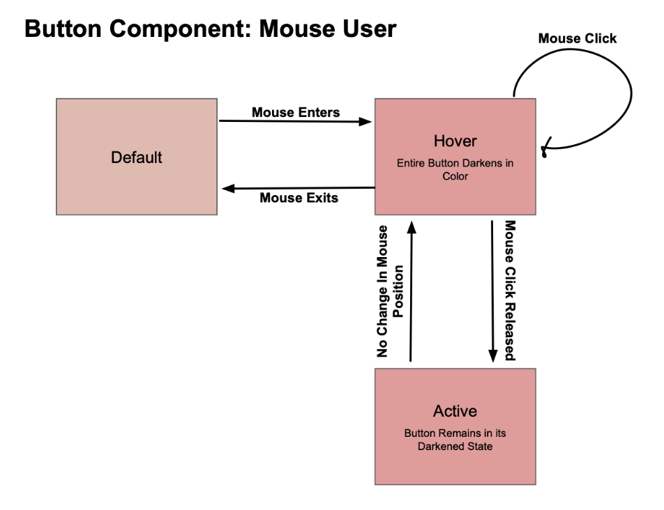
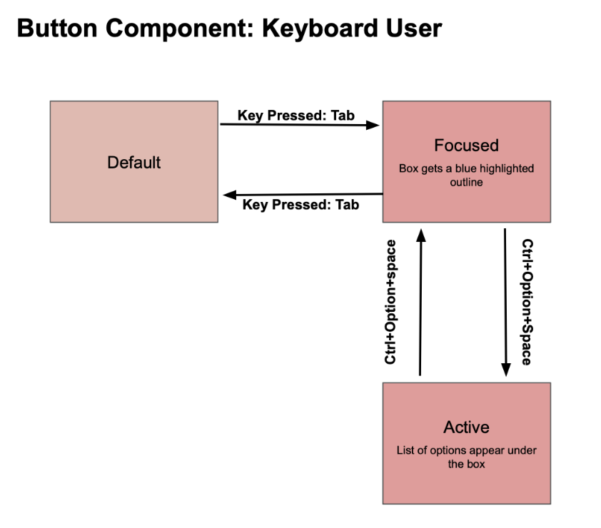
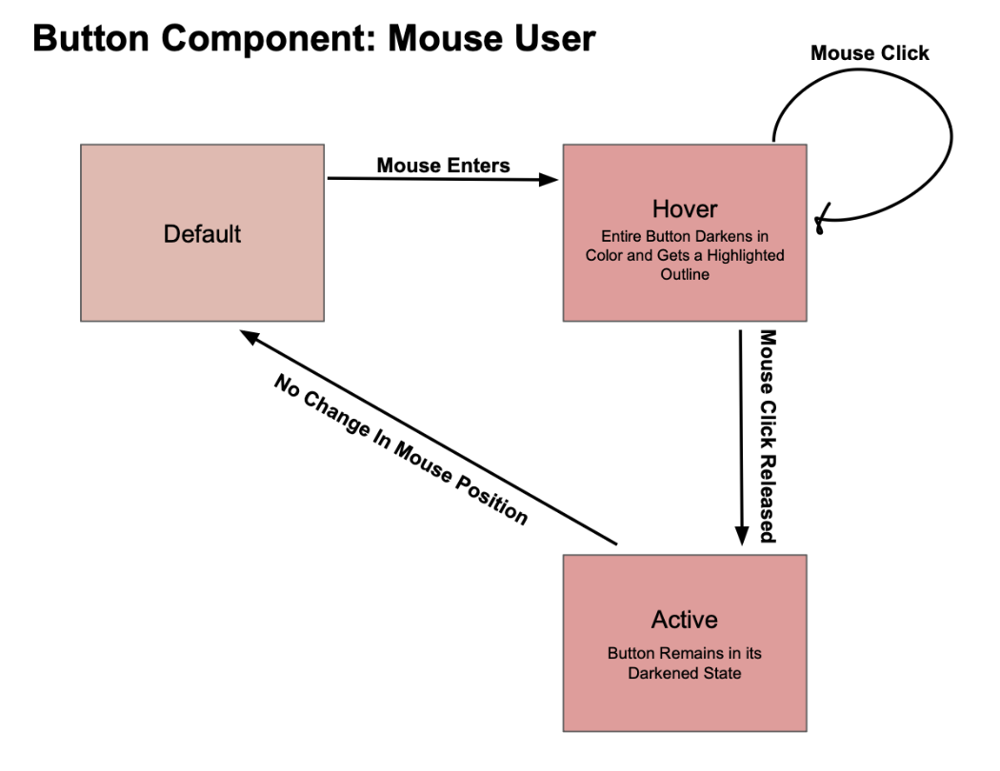
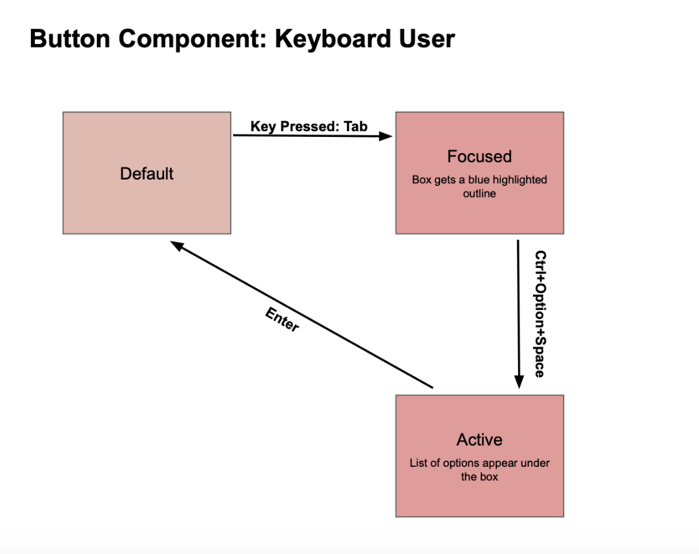
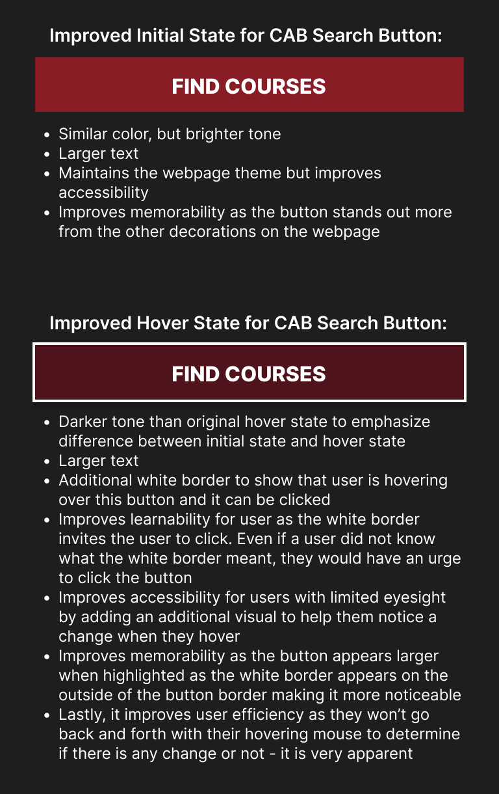

Let's take a look at state models!
On this page, we will take a look into state models for specific components and their redesign. A state model visually represents the various states of a component from their default to their various outputs based on user input.
Look at the orignial state models of the CAB search button below. The first image shows the available states for a mouse user and the second shows the available states for a keyboard user.


Now, the following images show improved state availability to enhance user experience:


Now that we have seen the state models for CABs search button, let us now take a look at the button itself. Below, you can see the original design for the button in its initial state (lighter) and the original design for the button in its hover state (darker).
Notice how the difference between these two states in the original images is very slight. I have redeisgned the button for these two states to make the difference easier for any user to see. Below, the first image shows the CAB button in its improved initial state and the second image shows the CAB button in its improved hover state.
